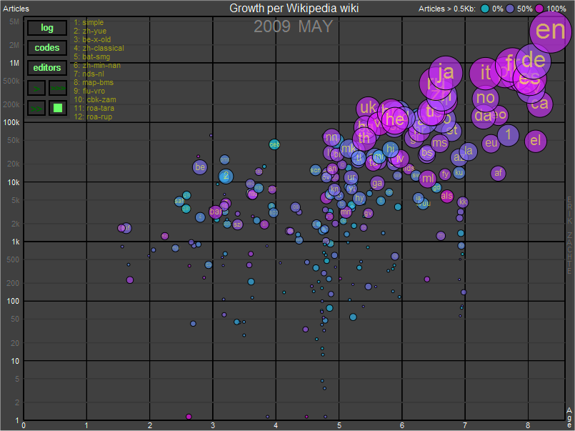
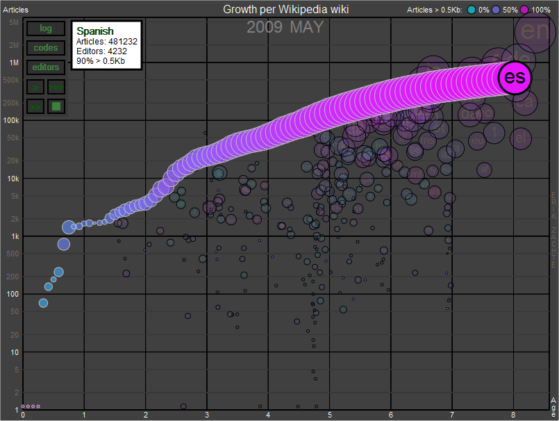

|
The animation runs only Firefox 3+, Safari 4+ and Chrome right now (requires html 5 canvas object with text support). Thanks to Hans Rosling for the inspiration. The animation is processor intensive: close browser window (tab) after use. |
||||||||||||||||||||||||||||||||||||||||||||||||||||||||||||||||||||||||||||||||||||||||||||||||||||
| Static version, Wikipedia only (8 Mb Flash) | Interactive version, all projects (requires Firefox 3+, Safari 4+ or Chrome) | |||||||||||||||||||||||||||||||||||||||||||||||||||||||||||||||||||||||||||||||||||||||||||||||||||
|  | ||||||||||||||||||||||||||||||||||||||||||||||||||||||||||||||||||||||||||||||||||||||||||||||||||||
The animation shows 4 aspects of the development of a project:
|
||||||||||||||||||||||||||||||||||||||||||||||||||||||||||||||||||||||||||||||||||||||||||||||||||||
|
Click on any circle during or after the animation to show the full history of one language wiki. In the example below you can see how the Spanish Wikipedia restarted its community after the so called Spanish Fork. You can switch between linear and logarithmic scale (last one works best), show all languages at same size, show or hide language codes. You can switch between Wikimedia projects, and change the size of the animation, see links below the chart. |
||||||||||||||||||||||||||||||||||||||||||||||||||||||||||||||||||||||||||||||||||||||||||||||||||||
|  | ||||||||||||||||||||||||||||||||||||||||||||||||||||||||||||||||||||||||||||||||||||||||||||||||||||